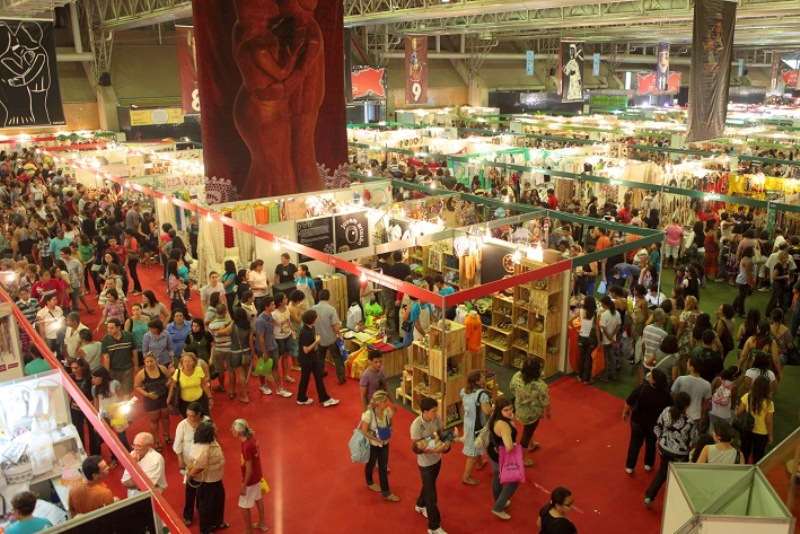

A feira, que em 1989, começou com apenas 60 stands e 200 expositores, hoje se orgulha de ser considerada a maior da América Latina.
Em 2009, 8 mil expositores de todos os estados do Brasil e outros 12 países da América Latina, África e Europa, ocuparam 1.100 stands do maior centro de convenções de Minas Gerais: o Expominas . Cerca de 170 mil visitantes, movimentaram 71,4 milhões de reais.